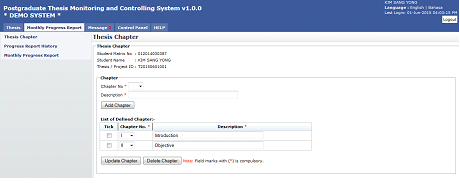
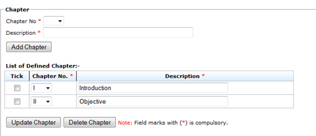
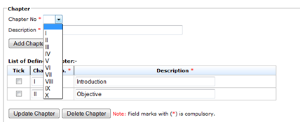
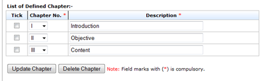
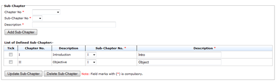
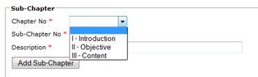
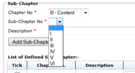
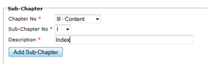
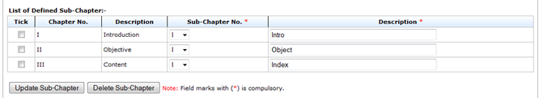

Thesis Chapter

Figure 8:Thesis Chapter
Pre-condition
- After approval by senate
Post-condition
- Can create chapter and sub-chapter
- Chapter and sub-chapter can be delete and update
Steps:-
- Click on the Monthly Progress Report tab on the Top panel
- Click on the Thesis Chapter menu on the Left panel
- System will display the thesis chapter that need to be create byuser.
- Under Chapter category
Add Chapter

Figure 9: Add Chapter
Pre-condition
- The proposal must be approved by the Senate
Post-condition
- Chapter can be updated or deleted
- Sub-chapter can be created
- The monthly progress report can be submitted
Steps:-
- To add chapter , choose chapter number on the field provided (refer figure 33)
- Then insert description of the chapter in the text field provided(refer figure 34)
- Click Add Chapter button to proceed.

Figure 10:Chapter No
Figure 11:Add Chapter
Update Chapter

Figure 12: Update Chapter
Pre-condition
- Chapter should be created first
Post-condition
- Chapter can be updated again
- Chapter can be deleted
Steps:-
- To update chapter , choose chapter number on the field provided (refer figure 35)
- Then change description of the chapter in the text field provided(refer figure 35)
- Tick the checkbox of the chapter
- Click Update Chapter button to proceed.
Add Sub-Chapter

Figure 13: Add Sub-Chapter
Pre-condition
- The chapter must be created first
Post-condition
- Sub-chapter can be updated or deleted
Steps:-
- To add sub-chapter , choose chapter number on the field provided (refer figure 37)
- Choose sub-chapter number on the field provided (refer figure 38)
- Then insert description of the sub-chapter in the text field provided(refer figure 39)
- Click Add Sub Chapter button to proceed.

Figure 14: Chapter No

Figure 15: Sub-Chapter No

Figure 16: Add Sub-Chapter
Update Sub-Chapter

Figure 17: Update Sub-Chapter
Pre-condition
- Sub-Chapter should be created first
Post-condition
- Sub-Chapter can be updated again
- Sub-Chapter can be deleted
Steps:-
- To update sub-chapter , choose sub-chapter number on the field provided (refer figure 40)
- Then change description of the sub-chapter in the text field provided(refer figure 40)
- Tick the checkbox of the sub-chapter
- Click Update Sub-Chapter button to proceed.
Created with the Personal Edition of HelpNDoc: Easy to use tool to create HTML Help files and Help web sites